STARTER > REASSEMBLY |
| 1. INSTALL STARTER CLUTCH SUB-ASSEMBLY |
Apply high-temperature grease to the parts indicated by the arrows in the illustration.
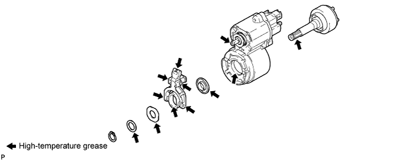
Install the starter clutch into the magnet starter switch.
Install the 3 starter washers and pinion drive lever with the snap ring.
| 2. INSTALL STARTER DRIVE HOUSING ASSEMBLY |
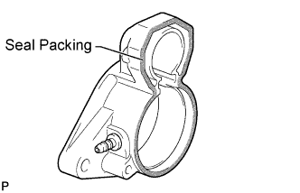 |
Apply a light coat of seal packing to the surface of the starter drive housing that contacts the starter magnet switch.
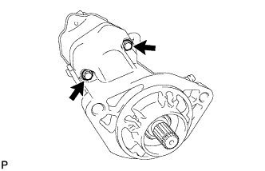 |
Install the starter drive housing with the 2 bolts.
| 3. INSTALL STARTER INTERNAL GEAR |
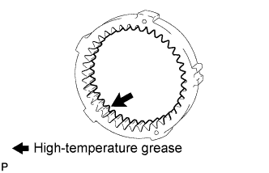 |
Apply high-temperature grease to the portion indicated by the arrow in the illustration.
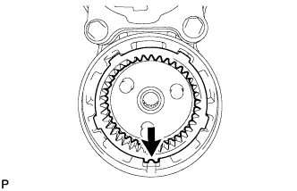 |
Install the starter internal gear.
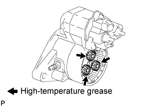 |
Apply high-temperature grease to the planetary gears.
Install the 3 starter planetary gears.
| 4. INSTALL STARTER ARMATURE ASSEMBLY |
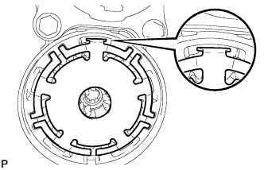 |
Install the starter washer.
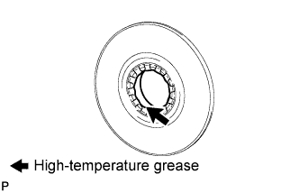 |
Apply high-temperature grease to the portion indicated by the arrow in the illustration.
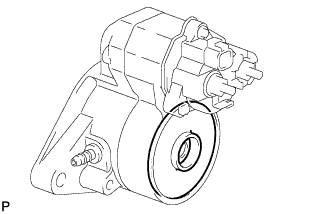 |
Install the starter plate.
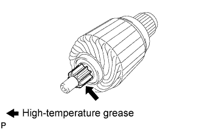 |
Apply high-temperature grease to the portion indicated by the arrow in the illustration.
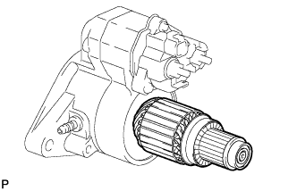 |
Install the starter armature to the starter plate.
| 5. INSTALL STARTER YOKE ASSEMBLY |
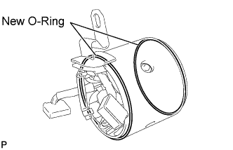 |
Install 2 new O-rings to the starter yoke.
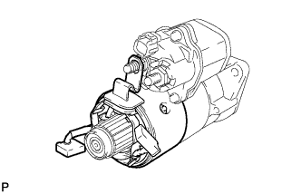 |
Install the starter yoke to the magnet starter switch.
| 6. INSTALL STARTER BRUSH HOLDER ASSEMBLY |
Place the brush holder on the starter armature.
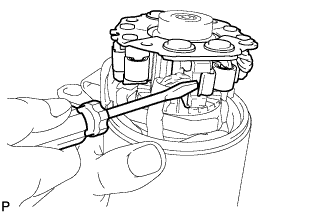 |
Using a screwdriver, hold the starter brush spring back and connect the 4 starter brushes to the starter brush holder.
Install the starter brush holder into the starter armature.
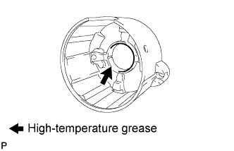 |
Apply high-temperature grease to the portion indicated by the arrow in the illustration.
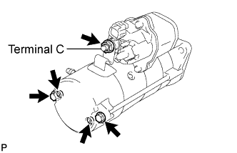 |
Install the commutator end frame with the 2 screws.
Install the 2 through bolts.
Install the nut to terminal C.
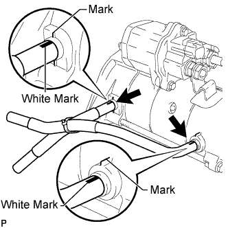 |
Install the 2 starter hoses to the starter.
| 7. INSTALL STARTER CLUTCH PINION |
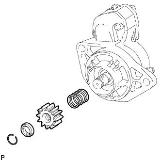 |
Install the spring, starter clutch pinion and pinion stop collar with the snap ring.